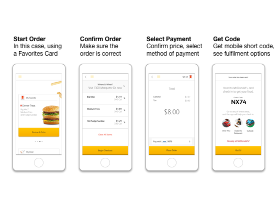
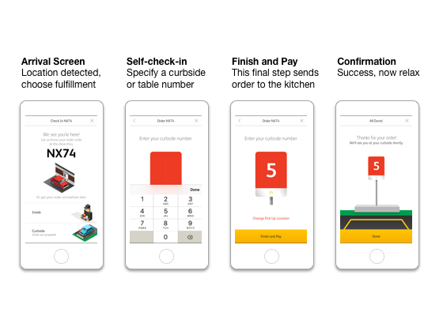

McDonald's · Mobile & Web
Mobile Ordering
Designing and implementing new ways for customers to order through mobile and web. Customers place an order in the app and pick it up at any McDonald's, at any fulfillment point, simply by pushing a button or saying their code.
- Role
- Experience & innovation lead
- Scope
- Mobile app, web, restaurant systems
- Scale
- Built to scale across 36,000 restaurants

Why it matters
This level of flexibility had never been done before. It matters because it lets customers shop the way they typically visit McDonald's.
Mobile ordering lets customers explore, order and get their food while on the go, skipping the line.

The Check-in Platform
The platform underlying the McDonald's mobile app, called foundational check-in, uses GPS to redefine how mobile ordering and digital engagement integrate into hospitality operations.
The app detects the restaurant on arrival, and the meal isn't prepared until the customer checks in, which balances control and food quality. Foundational check-in delivers simplicity, speed, quality and flexibility.
